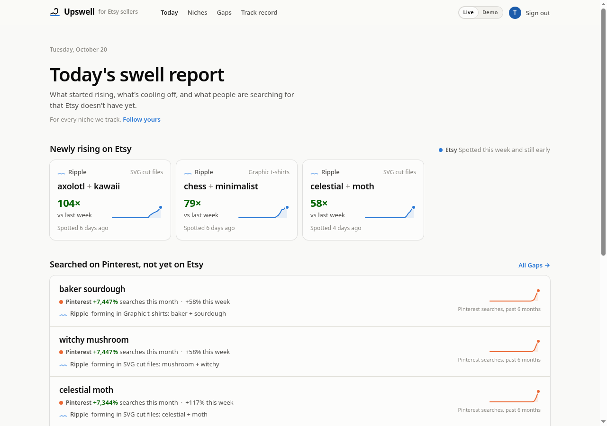
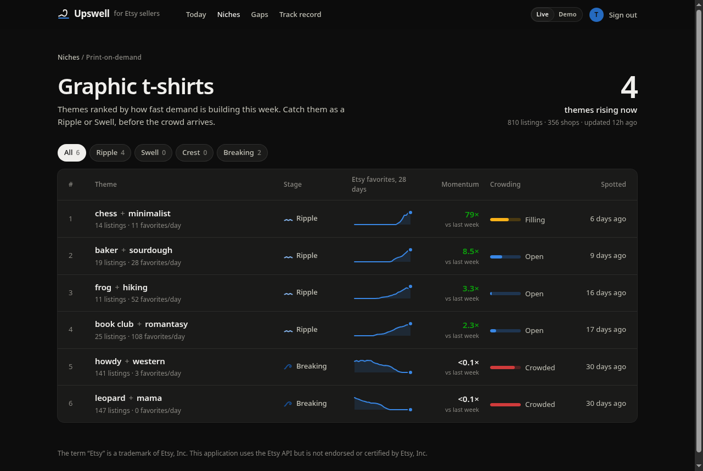

Research preview, not open to the public yet
Catch the swell before the crowd.
Upswell reads public Etsy demand and Pinterest search trends every day and shows sellers which product themes are rising while they're still Ripples, so they can make something original for demand that's only just arriving.
Everyone else shows you what already happened.
Etsy
What exists
A grid of listings for whatever you search.
What inspires
A feed of ideas to save, with no sense of timing.
Keyword tools
What you ask about
Search volumes for words you already thought of.
Upswell
What's rising, and how early you are
Etsy demand and Pinterest searches lined up in time, with a Stage for every Theme.
How it works
- 01
Read
Once a day, Upswell reads public Etsy statistics (favorites, views, shops' public sales counts) and trending search keywords from Pinterest, through their official APIs.
- 02
Spot
Listings group into Themes by the tags they share. Each Theme gets a momentum, a crowding level and a Stage.
- 03
Act
Sellers open a daily report: new Ripples, Gaps nobody has filled yet, and the evidence behind each one.
Every Theme has a Stage. Each one says what to do.
- Ripple
Make now
Tiny but accelerating. The best time to start.
- Swell
Still room
Rising fast and not crowded yet.
- Crest
Be quick
Near its peak; competition is arriving.
- Breaking
Move on
Crowded or fading. Make the next thing.
Two platforms, kept apart.
What buyers are favoriting and buying
Momentum, crowding and breakout listings, from public listing and shop statistics.
What people are searching for
Keywords whose searches are growing, shown as their own signal and never blended into Etsy numbers.
When both signals rise together, a Theme is labelled "Rising on both platforms". Otherwise each platform speaks for itself.
The research dashboard


Screenshots show the dashboard running on simulated data. No numbers on this page are real results.
How Upswell uses Pinterest
What it reads
- Trending search keywords and their growth rates, from the Pinterest Trends API.
- Read-only, once a day, within Pinterest's rate limits.
- Shown to sellers as their own "On Pinterest" signal, credited to Pinterest.
What it never does
- No Pinterest user data, boards, Pins or account information.
- No posting, saving or writing to Pinterest.
- No scraping, no reselling of Pinterest data.
Who's behind it
Upswell is built by an independent Etsy seller. It's a research preview: a private dashboard is being tested before any public launch. A paid plan (about $10 a month) is planned once the signals prove themselves. Questions? Open an issue on GitHub.
Make the next thing, not the last one.